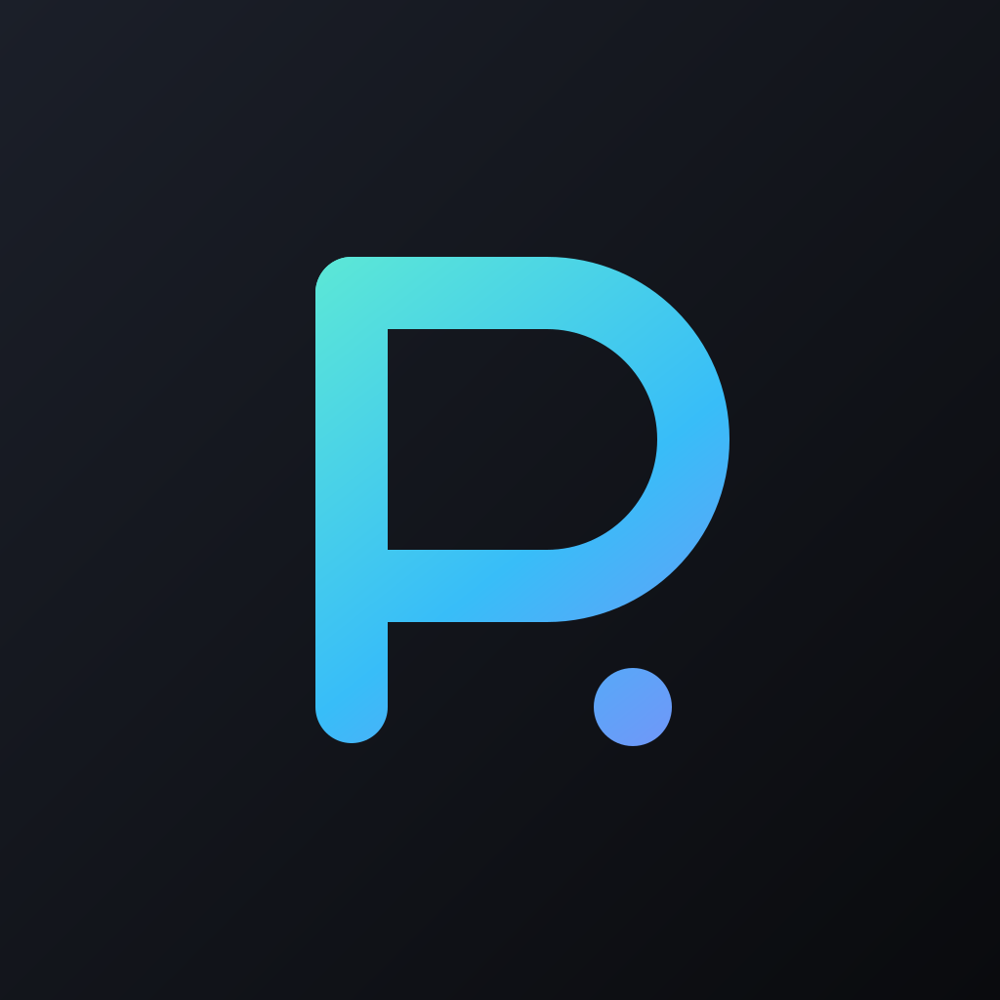

Readiness signal
1 build 已上傳，送審尚未可用
簽章、App ID、Sign in with Apple capability 與 TestFlight upload 已通；商店資料、隱私與帳號生命週期尚未補齊。
Parley / iOS release readiness
這不是只補一張 icon。Parley 要帶著自己的聲音進 App Store：清楚說明怎麼錄、資料去哪裡、怎麼退出，並讓第一組 screenshots 看起來像同一個產品。

Readiness signal
簽章、App ID、Sign in with Apple capability 與 TestFlight upload 已通；商店資料、隱私與帳號生命週期尚未補齊。
App Store reality
0 / 10
目前 App Store Connect 的 screenshots、描述、keywords、Support URL、review credentials、聯絡人與 notes 都是空的。
推薦 Night Signal：不是再發明一個 logo，而是把目前已經對的 mark、錄音紅點、speaker 色與雲端信任感，整理成同一組商店敘事。
| Priority | 項目 | 現況 | 補法 |
|---|---|---|---|
| BLOCKER | 帳號刪除 | Better Auth / app 都沒有 deletion flow。 | 雲端刪 session、user、個人 recording/R2；iOS 設定頁內啟動、確認與完成回饋。 |
| BLOCKER | 隱私政策 | parley.tw/privacy 目前 404，app 內也沒有入口。 | 上線中英／繁中 policy，描述音訊、逐字稿、帳號、R2、Soniox／Groq、保留／刪除；Settings 加連結。 |
| BLOCKER | Store metadata | Screenshots、描述、keywords、Support URL、copyright、review credentials、聯絡人、notes 均空白。 | 產出 Night Signal 5 張 iPhone screenshots，填 zh-Hant 首發資料與 review packet。 |
| WATCH | 錄音同意 | 目前點「開始錄音」就請求 mic，未提示與會者同意或雲端轉錄。 | 首次錄音 sheet：目的、資料流、與會者同意、可在 Settings 關閉；不影響後續一鍵錄音。 |
| WATCH | 資料韌性 | 停止錄音後若 upload 失敗，temp Ogg 會被刪除，不能重試。 | 改成 pending upload queue；顯示同步狀態、保留檔案直到成功或使用者刪除。 |
| WATCH | Login review flow | Hosted auth 已有 email / Google / Apple；但 review test account 與 Notes 尚未提供。 | 建立可測試帳號、資料；Review Notes 說明 ASWebAuthenticationSession handoff 與 hosted STT。 |
| READY | App ID / SIWA | com.pathors.parley.ios 已啟用 Sign in with Apple；hosted auth 已有 Apple 路徑。 | 保留，並以 TestFlight 真機驗完整登入。 |
| READY | 簽章 / Icon | Apple Distribution、Store profile、1024 PNG 無 alpha、TestFlight build 1.0 (1) 已上傳。 | Night Signal 只做一致性 refine，不重做識別。 |